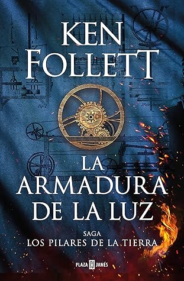

La armadura de la luz (Los pilares de la tierra #4)
Reseña por Jorge I. Zuluaga

Ver reseña en GoodReads (necesita cuenta)
En esta novela se narran los hechos y la vida de personajes que ocurrieron en el Kingsbridge de la saga y en otras poblaciones vecinas, entre los años 1792 y 1824. Con esto, creo que faltarían uno o dos libros para conectar Los pilares de la Tierra con el siglo XX.
El estilo de esta novela, los personajes y el tipo de acción que se desarrolla en ella son más parecidos a los de la trilogía del siglo XX. Esto me decepcionó un poco hacia el final del primer tercio de la novela. Follett nos tenía acostumbrados a novelas con acción trepidante, tramas con muy buen suspense, personajes muy odiosos y, cómo no, bastante violencia.
No es que la violencia sea buena, ni en la vida real ni en la ficción, pero en las novelas de la serie de la Edad Media, la brutalidad de algunos hechos narrados por Follett le aportaba un picante adicional a las historias que está un poco más ausente en la trilogía del siglo XX (a pesar de que aquella aborda el convulso siglo de las peores guerras de la historia). Tal vez esto sea evidencia de que los tiempos eran mucho mejores en el periodo en el que se desarrolla la novela, comparados con los de la Edad Media, o tal vez, simplemente, el estilo de Follett ha evolucionado.
Dejen que profundice en esta afirmación.
En la mayor parte de "La armadura de la luz", la narración es un poco más intimista que en otras novelas de la saga. La novela se concentra en describir las relaciones entre los personajes, los amores imposibles, la familia, los negocios, la política, etc., y trata menos sobre los conflictos, a veces muy violentos, entre las clases o los creyentes de las distintas religiones. Los personajes malos de la historia no lo son tanto como los que conocimos en los libros anteriores, aunque no dejan de despertar una ardida animadversión. Todo esto hace de "La armadura de la luz" una historia más cercana a "Ana Karenina" que a "Los pilares de la Tierra".
La única excepción a este tono más intimista en la novela son los capítulos de la penúltima parte. En ellos, Follett recrea de manera magistral, como nos tiene ya acostumbrados en sus novelas históricas, los antecedentes y la acción misma de la batalla de Waterloo, en la que Napoleón Bonaparte perdió finalmente la guerra contra las fuerzas aliadas de lo que fueron 23 años del primer conflicto de características geográficas realmente amplias en la historia moderna.
Tenía muchas expectativas en cuanto a la posible narración de algunos eventos del periodo del Terror que siguió a la Revolución francesa —que empieza apenas un par de años antes de los primeros hechos narrados en la novela— y, por supuesto, al posible protagonismo del mismo Napoleón Bonaparte en algún apartado de la novela. Lamentablemente, ninguna de las dos cosas ocurre.
Si bien los eventos en Francia, tanto durante la Revolución como en las guerras napoleónicas, impactan a los habitantes de Kingsbridge, la acción de la novela siempre está lejos de ambas. Así que me quedaré con las ganas de leer un relato de Follett sobre lo que pasó en estos convulsos conflictos.
Como sucede en las otras novelas de la saga, las innovaciones técnicas del momento son protagonistas en "La armadura de la luz". En este caso, la atención recae sobre los artilugios mecánicos fabricados a finales del siglo XVIII y principios del XIX para facilitar la manufactura, en especial el batanado, el hilado y la fabricación de telas y paños. También son protagonistas las primeras máquinas de vapor que llegaron a Kingsbridge para facilitar esas mismas tareas y, por supuesto, los correspondientes desplazamientos de mano de obra y los conflictos laborales que generaron.
Me quedo a la espera de las que tal vez sean una o dos novelas adicionales que sirvan de "transición" entre el siglo XIX y el siglo XX. Esperemos que Follett nos dure lo suficiente.
PD: Por los días en los que estaba terminando de leer esta novela ocurrieron dos casualidades que solo puedo catalogar de increíbles. La primera (la única de la que me acuerdo por ahora) ocurrió cuando leí en una escena hacia el final del libro (no hay spoilers aquí) el versículo de la Biblia que dice: “Nadie tiene mayor amor que este, que uno ponga su vida por sus amigos”. Casualmente, unos días antes de llegar a esta parte de la novela, la misma frase apareció en la inolvidable película "La sociedad de la nieve" (estrenada en enero de 2024), película que narra la historia del equipo de rugby uruguayo que se accidentó en los Andes en 1972. Allí, exactamente la misma frase es escrita en un papel por Numa Turcatti, uno de los protagonistas de la película; el guionista, sin embargo, nunca mencionó que se trataba de un versículo de la Biblia. De la segunda casualidad, lamentablemente, no me acuerdo, pero apenas me regrese a la memoria la pondré por aquí.